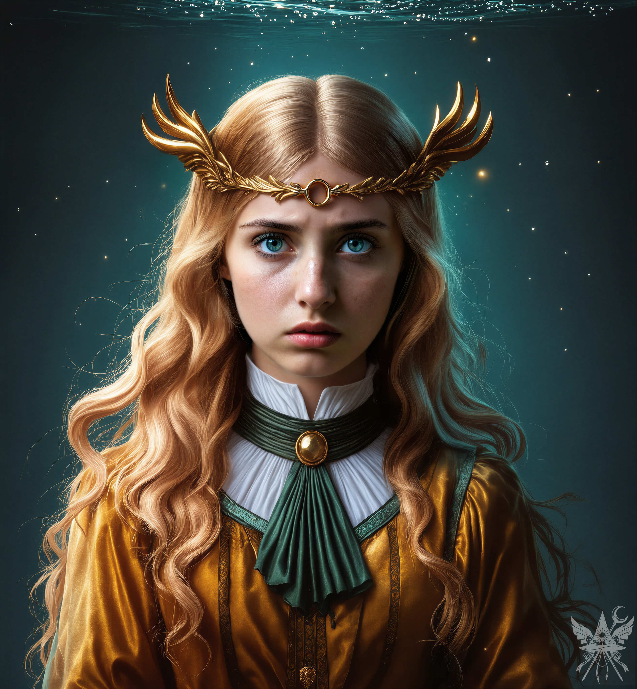

（『浄化の儀式』って、まさか洗脳の類かしら？ 額に焼印でも押されるとか……）
神殿の冷たい石畳の上に立ち尽くし、頭の中で最悪の想像を巡らせる。「あの……コンガラ様。この儀式とは、一体どのようなものですか？ どうにか、ご容赦はいただけないでしょうか」
「よかろうと言いたいところだが、見習いの身で拒むつもりか？ 我が恩情を無下にするとは何事だ」コンガラは、周囲の空気が凍りつくような冷ややかな威圧感を放って言い放った。「まさか、今まで一度も受けたことがないと言うのか？」
「ええ、実のところ……」
「ならぬ。長期間身体を清めねば不浄を纏い、邪悪なものに蝕まれるであろう」
（なんだ、ただの入浴を『浄化の儀式』って大袈裟に呼んでるだけね……）「承知いたしました。では、甘んじて受けさせていただきます」
「準備が整ったら、カナに浴室まで案内させるがよい。我には別用があるゆえ、これにて失礼する」
身を翻そうとするその背中へ、先ほどの遺跡で見つけた残骸について問いかけた。「あの、自転車ですが、どのように処理されるおつもりですか？」
「燃やして捨て置くつもりであったが、何か？」
「あの……もしよろしければ、私に使わせていただけないでしょうか。移動が速くなれば、コンガラ様にもっとお役に立てると思うのですが」
「そうか。ならば、持っていくがよい」コンガラはそっけなく答え、重々しい足音を響かせて神殿の奥へと消えていった。
門の近くに立てかけられたソレに手を伸ばす。どう見ても子供用のサイズで、ひどく頼りない。だが、グリップを握りしめた瞬間、指先から微かな静電気が這い上がってくるような奇妙な感覚があった。魔力とは違う、未知の波長だ。
それを傍らに置き、薄暗い部屋の片隅で書類仕事をしているカナの元へ歩み寄った。「あの……この前の話、まだ途中だったわよね」
「ええと……何の話でしたっけ？」カナはぎこちなく笑い、伏し目がちに視線を逸らす。
「殺人事件のことよ。私は小兎姫が犯人だと思うのだけれど」
「そうですよね！ 証拠は全部あの鬼女警官に不利なものばかりですもの！ もうコンガラ様にはお伝えになったんですか？」
「ええ、彼も納得しているみたい。ところで、小兎姫を追放する計画があるなら、私も協力させてほしいのだけれど」
その言葉を聞いた途端、カナの纏う空気が一変した。作られた愛想笑いが剥がれ落ち、底知れぬ冷たさを孕んだ笑みが浮かび上がる。「あの女にはもう勝ち目はないわ。コンガラ様の懐刀であるこの私に、誰が逆らえるっていうの？」
（カナの奴、本性を隠す気すらないのね。面白いわ）「頑張ってね。私はコンガラのことを有能な指揮官だとは思っているけれど、恋愛感情なんて欠片もないから安心して」
儀式へ向かう前に、少しだけ例の乗り物を試しておくことにした。サドルに跨がると、一瞬だけ視界がブレたかと思うと、不思議なことに身体のサイズにぴったりと馴染んでいた。ペダルを踏み込み、荒涼とした大地へと滑り出す。
喉を焼くような乾燥した風が顔を打ち据え、ゴツゴツとした岩肌の振動が腕の骨を直接揺さぶってくる。酸素の薄い、錆びついた空気を切り裂いて疾走する感覚は、この宗教的で狂気に満ちた世界において、あまりにも滑稽で、そして酷く心地よかった。
丘を越え、宙に浮くような浮遊感を味わったその時、セピア色の澱んだ空の彼方に異常な気配を感じた。急ブレーキをかけ、砂利を蹴立てて停止する。
焦げたようなオゾン臭を引きずりながら、奇妙な振動音を立てて空を這い回る「それ」は、不規則な軌道を描いて飛び回っていた。網膜に焼き付くような残像を刻みつけた後、呆気なく虚空へと溶けていく。
しばらく待ってみたものの、風の音以外は何も聞こえてこなかった。諦めて神殿へと引き返す。
＊＊＊
「この馬鹿どもが！ 揃いも揃って公務執行妨害でしょっぴくわよ！」
神殿の石壁を震わせるほどの怒声が響き渡っていた。両脇を屈強な亡者たちに抱え上げられながらも、小兎姫は全身で激しく抵抗している。荒縄が食い込む音と、彼女のギリギリと歯を食いしばる音が、重苦しい通路の空気をさらに張り詰めさせていた。
「幻想郷に戻ったら、お前ら全員牢屋にぶち込んでやる！ 絶っ対に逃がさないからな！」
圧倒的な支配者のオーラを背中で放ちながら、コンガラは無言で荒縄の端を引いている。松明の煤けた匂いが立ち込める中、少し離れた暗がりから、カナがその光景を酷く満足そうに見つめていた。
「特に、お前よ！ カナ・アナベラル！ 二度と幻想郷の土を踏めると思うな！ 全部こいつの仕業よ！ 間違いないわ！」
コンガラは立ち止まり、一切の感情を排した動作で刀を抜き放った。空気を切り裂く鋭い音と共に、虚空にどす黒いポータルが口を開く。不可逆的な追放の儀式。亡者たちが容赦なく彼女の背中を突き飛ばす。
闇へ飲み込まれる寸前、小兎姫の爛々と輝く双眸がこちらを射抜いた。「何を見世物にしてるのよ、この魔女！ 次に会った時は、絶対に現行犯逮捕してやるんだから！」呪詛のような捨て台詞は、深い穴の底へと吸い込まれ、二度と響くことはなかった。
静寂を取り戻した回廊で、コンガラへ声をかける。「あの女の子……どうなったのでしょうか。解放されたのですよね？」
「あの童には、不可解なことが起きたのだ」コンガラは忌々しげに眉間を寄せた。「兵が申すには、解放してくれと懇願していたそうだが……それを拒むと、おい！ あの童は、何と申したのだ？」
控えていた兵士が進み出る。「『夢でよかった』と呟き、自らの頬をつねると、そのままかき消えるように……」
「……いまだに、あの童の正体が知れぬ」コンガラは重々しく息を吐き、刀を納めると、次の指示を出して足早に去っていった。
彼を見送った後、カナを振り返る。「あの……コンガラ様の言う『浄化の儀式』って、具体的にどんなことをするのか、知っているかしら？」
「儀式ですか？ ああ、あれは神殿の泉で入浴することですよ。『体を清らかにせねば、心も穢れる』ってコンガラ様は仰っているんです。ご案内しましょうか？」カナは先ほどの冷酷さを微塵も感じさせない、愛想の良い笑みを浮かべて歩き出した。
案内された中庭には、殺風景な岩肌に囲まれた小さな湯船があった。この死に絶えたような空間で、なぜ湯が湧き続けているのか。岩の表面には風化した文字が彫られているが、摩耗が激しく意味を読み取ることはできない。
指先を浸すと、微かな塩気と心地よい温もりが伝わってくる。衣服を脱ぎ捨て、砂埃に塗れた身体をゆっくりと沈めていく。しかし、底の見えない深みに足をとられ、思わず頭まで没してしまった。
途端に、強烈な水圧と圧倒的な光の奔流が全感覚を奪い去る。
（やっぱり、ただの温泉なわけがなかったのね……！）
『メデア殿。わたくしは、ずっとそなたを見守っておりました』
鼓膜ではなく、脳の髄へ直接響き渡るようなテレパシー。無音の青緑色の深淵の中で、圧倒的な存在感を放つ「誰か」がこちらを凝視していた。その額のぽっかりと空いた虚無からは、あの遺跡のレリーフと同じ、取り返しのつかない深い喪失感が漂っている。古びた青銅の匂いが、不思議と温かな生命の息吹へと変わっていくのを感じた。

「あなたは……一体誰なの？」
『わたくしは、そなたを知っております。そなたを選んだのは、このわたくしなのです』
（幻覚……？ それとも、私は本当に気が狂ってしまったのかしら……？）
『愛する夫を救ってほしいのです。どうかコンガラを……彼自身から解き放ってあげてください。あの者は、大切なことを何もかも忘れてしまったゆえ……』
（確かに、あのコンガラとかいう愚か者にはカウンセリングが必要だとは思っていたけれど……）
『コンガラは愚か者ではありませぬ。ただ、愛に囚われすぎただけなのです。そなたにはまだ分からぬことでしょうが……』
（まさか、私の心を読んでいるの……？）
『メデア殿。そなたなら全てを正せるはず。この世界を救うことさえ……。そうすれば、望むものは全て手に入るでしょう。そなたにはその意志がおありですか？』
[SYSTEM ALERT: 音響兵器デプロイ完了]
▼ 本章の絶望を1000%味わうための専用聴覚データ ▼
■ YouTube：『静寂の閃（Seijaku no Sen）』